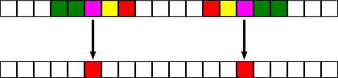

1D Cellular Automata and the Edge of Chaos
Info and Instructions
Brief Instructions: The program CA.html creates images that show the evolution of one-dimensional cellular automata over time. (What this means is explained below.) A set of rules for an automaton is generated randomly when you click "Create New Rule Set Using". Only some of the rules in the set are active; the slider at the top determines how many are active. When very few are active, the image tends to be boring, with the colors either dying out or repeating in a simple pattern. When most of the rules are active, the image again tends to be boring, but this time because the pattern is too chaotic. Maybe somewhere between, at the "edge of chaos," you can get interesting and beautiful patterns.
To use the program in the simplest way possible, just keep hitting "Create New Rule Set Using" over and over (while "Run" is enabled). Maybe try adjusting the slider to get a better result. Maybe click "Create New World Using" to try different initial values for the automaton. Maybe set "Run Speed" to "Fastest," and try "Cell Size" equal to 1 instead of 2.
About "saving in browser": If your web browser has a feature called "local storage," you will see a button labeled "Save Example in Browser." Use that button if you find an example that you would like to keep. The data for the example will be saved in the browser's local storage area under the name in the box labeled "Name." You can load it back into the program later by selecting the name from the list under "Load Example." The saved data is associated with a particular browser on a particular computer. It will be be available in the future when you use the same browser on the same computer to visit the same web site.
Usually, the program starts with a randomly generated example, but here are a few links that will instead start the program with one of ten per-programed examples, to give you an idea of the sort of patterns that can be turned up by some exploration:
Example 1 |
Example 2 |
Example 3 |
Example 4 |
Example 5
Example 6 |
Example 7 |
Example 6 |
Example 9 |
Example 10
About Cellular Automata
A one-dimensional cellular automaton (CA) consists of a row of "cells," where each cell can be in one of several "states," plus a set of "rules" for changing those states. The cells can be visualized as squares, where the state of the cell corresponds to the color of the square. There is only a finite number of possible states. I refer to the row of cells as a "world." For example:
This shows part of a world where possible states correspond to the colors red, green blue, yellow, and magenta. Ideally, the world would extend infinitely to the left and to the right, but we will use a finite world in which we imagine the left end being attached to the right end.
The rules for a CA tell how to a create a new world from the current world. In a CA, a cell has a "neighborhood" consisting of that cell and some cells to the left and right of that cell. The size of the neighborhood is a property of the CA. For example, if the neighborhood size is 5, then the neighborhood of a cell consists of the cell, the two cells to the left, and the two cells to the right. When creating a new world, the new color (or "state") of a cell in the next version of the world is determined by the colors of all the cells in its neighborhood. The CA needs a rule for each possible combination of colors in a neighborhood. For example, there might be a rule that says, "if the neighborhood of a cell contains the colors green, green, magenta, yellow, red in the current world, then the square will be red in the next world:

The illustration shows the neighborhoods of two magenta squares. In both cases, there is rule that makes the square red in the next world. (Note that each neighborhood is a reflection of the other. We say that a CA is "isotropic" if, whenever two neighborhoods are reflections of each other, then they produce the same color in the next world. A CA that is not isotropic is called "anisotropic." Isotropy is a kind of symmetry.)
The rules have to be applied simultaneously to all the cells in a CA, producing a new world all at once. Once the new world has been created, we can stack them up to produce a two-dimensional picture. Each row in the picture is a world. The initial world is on top. After that, each row is produced by applying the rules for the CA to the row above. Here is an example from the program, In this picture, as in the program, there is no box drawn around the individual cells:
The two dimensional pattern of cells can make nice patterns. That's the point of the program! (The CA's in this program are one-dimensional because the world is one-dimensional. The two-dimensional picture shows the evolution of the one-dimensional world over time. There are also two-dimensional CA's, where the world itself is two-dimensional—but that's something for a different program.)
For this program, we think of the cells in a CA as being either "alive" or "dead." There is exactly one state that is dead. All the other states are alive. All the CA's in the program satisfy the following restriction: If a cell and all its neighbors are dead, then that cell can't come to life in the next world. That is, the rule for the neighborhood that contains only dead cells produces a dead cell in the next world. Looking back at the previous illustration, it seems that yellow must represent the dead state in that example.
The rule for an all-dead neighborhood always leads to the dead state. Any other rule for the CA might lead to a dead state or might lead to an alive state. We associate a parameter called "lambda" to a CA. Lambda is a number between zero and one defined as the fraction of rules, not counting the all-dead rule, that lead to a living state.
When the program creates a new set of rules, each rule except for the all-dead rule is assigned a random living state for the cell in the next world. However, the program doesn't "activate" all the rules. Instead, it just activates a fraction of them, where that fraction is given by lambda. When a rule for a neighborhood is not active, that neighborhood leads to the dead state, just as if the rule assigned the dead state to that neighborhood.
When lambda is zero, all cells die immediately. When lambda is small, all the cells tend to die off after a few generations. When lambda is one, since the living state for each rule was chosen at random, you tend to get random-looking, chaotic behavior. Interesting and beautiful patterns are more likely to be found at intermediate values of lambda. The program lets you control the value of lambda, to help you search for the interesting cases.
The "edge-of-chaos" idea refers to the fact that small values of lambda give patterns that are boring because they are highly ordered. Large values of lambda give patterns that are boring because they are chaotic. As you increase lambda from smaller to larger, you might see a transition from order to chaos. That's the "edge of chaos," where interesting things happen. That's the theory, anyway. As you use the program, you can judge for yourself whether it works. (Note that the edge of chaos is not given by some fixed value of lambda. The value will depend on the particular set of random rules that you are working with.)
For more information, see the Wikipedia article on cellular automaton, which is mostly about 2D automata. You might also see the short article on edge of chaos. The name of the "lambda" parameter was introduced by a mathematician named Christopher Langton, who studied the edge-of-chaos idea in the context of 1D cellular automata.
Using the Program
CA.html should be fairly straightforward to use. The "Run" button lets the cellular automaton run automatically, starting with some initial configuration of the world and displaying each new world under the one that preceded it. The "Run to Next Screen" button will compute just as many worlds that will fit in the drawing area and then stop. It's main purpose is to allow you to produce one complete image. Note that in many web browsers, you can right-click the image and use a command such as "Save Image" or "View Image" to save a copy of the image.
The "Create New World Using" button creates a new initial world. It does not change the set of rules that define the current CA; it just uses a different initial world. Except for the "One Dot" and "Dots" option, the states are chosen at random. The "Fill" popup menu affects how much of the world is filled with live cells. If you set it to "Clump", for example, most of the cells will be dead, except for a clump of live cells in the middle. The options "All cells, symmetric", "Symmetric cells", and "One Dot" produce a world that is symmetric under horizontal reflection. Assuming that the rule set is isotropic, that symmetry will be preserved as the world evolves, and you will get a symmetric image. The "Cell Size" menu sets the size of the squares that are used to represent the cells.
The "Edit Colors" button lets you modify the colors that are use to represent the states. You get to select a color and drag a set of sliders to modify it. The colors are numbered 0, 1, 2, ..., with each number corresponding to a state. Color number 0 is the one that corresponds to the "dead" state. The color changes stay in effect until you change the number of states.
The "Create New Rule Set Using" button randomly generates a new set of rules. Properties of the CA are given by the three controls below the button. Note that the list of possible neighborhood sizes depends on the number of states; for a larger number of states, the maximum size of the neighborhood might be smaller. The restriction is that the total number of rules needed for the automaton must be less than 220. As noted above, only a fraction of the rules are activated, where that fraction is given by the value of lambda. When the rule set is created, the rules are also arranged into a random order, which gives the order in which they will be activated as lambda increases.
The final set of controls on the left edge of the browser window is visible only if your web browser supports local storage. You can save, load, and delete examples that are saved permanently in the web browser's configuration folder on your computer. The method used will probably not work well saving a large number of examples. Names for examples are limited to 15 characters. Saved examples are listed by name in the popup menus under Load and Delete buttons. Currently, no way is provided to export the examples from the browser.
You can adjust the value of the lambda parameter using a slider above the image. Lambda is the fraction of rules that have been activated. When you change the value, the program restarts the current world from initial state, using just the activated rules. Rules that have not been activated produce dead cells, as discussed above. Next to the slider is an input box that you can edit to control the number of rules in use more precisely. (The number of rules in use is at least 1 since the rule for a neighborhood containing only dead cells is always in use.)
The size of the image depends on how much room there is for it in the window. If you change the size of the window, the size of the image will also be changed, and the program restarts the current world from its initial state (using as much of the initial world as will fit in the width of the image).